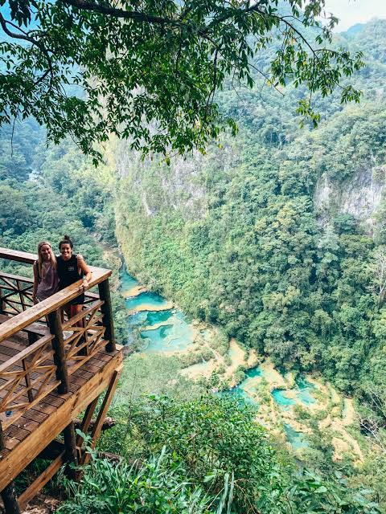
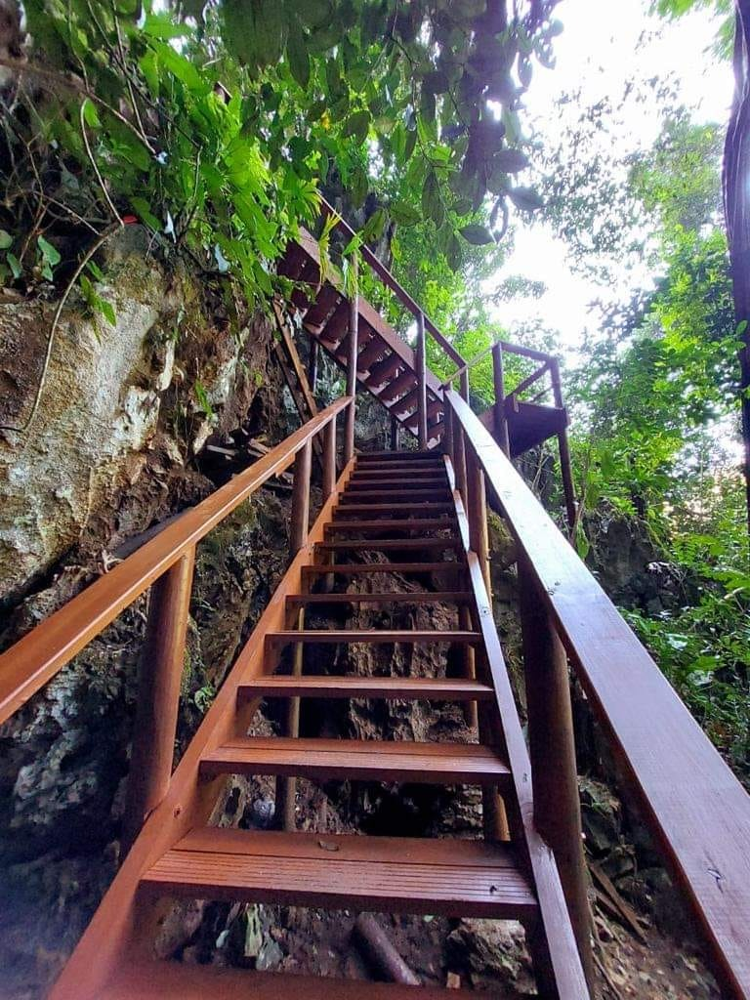
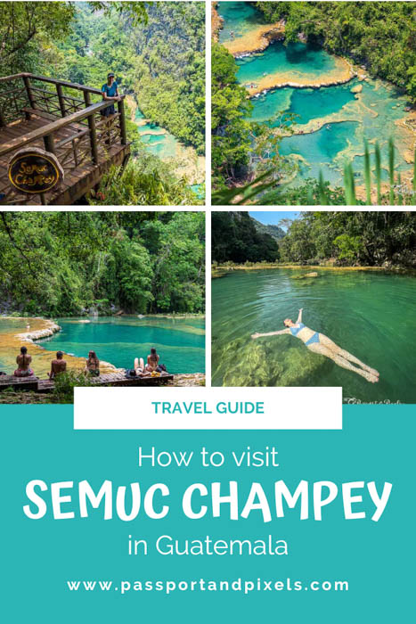

Galería de Imágenes




Descubre uno de los destinos naturales más impresionantes de Guatemala, famoso por sus pozas de agua cristalina y sus increíbles paisajes.
Semuc Champey es un monumento natural ubicado en el municipio de Lanquín, Alta Verapaz, Guatemala. Es reconocido por sus piscinas naturales de color turquesa que se forman sobre un puente de piedra caliza bajo el cual fluye el río Cahabón. Rodeado de montañas y abundante vegetación, este destino ofrece un ambiente ideal para disfrutar de la naturaleza y realizar diversas actividades al aire libre.



| Fecha | Horario | Actividad | Lugar |
|---|---|---|---|
| 15/09/2026 | 06:00 a.m. | Salida desde Ciudad de Guatemala | Terminal de Buses |
| 15/09/2026 | 12:30 p.m. | Almuerzo | Lanquín |
| 15/09/2026 | 02:00 p.m. | Recorrido por Semuc Champey | Pozas Naturales |
| 15/09/2026 | 04:30 p.m. | Visita al Mirador | Cerro Semuc Champey |
| 15/09/2026 | 06:00 p.m. | Regreso al hospedaje | Lanquín |